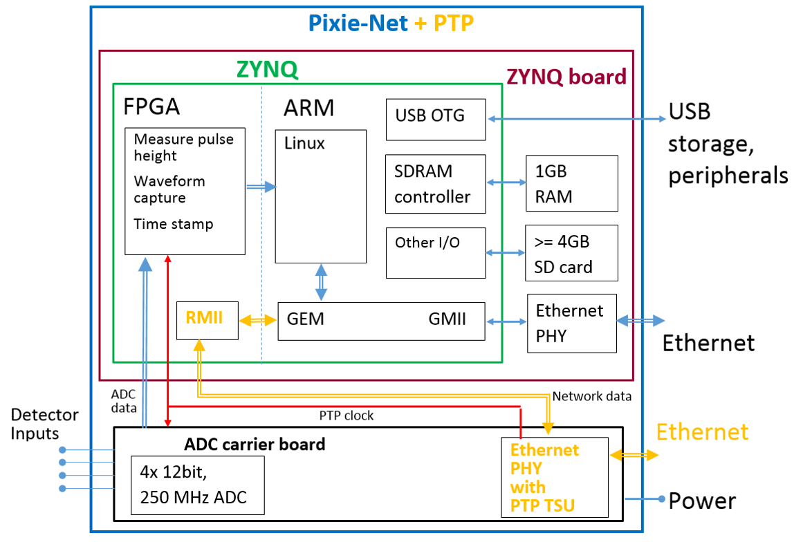

Early Adopter Products
XIA continuously develops new products, and likes to share them with users as soon as possible. Therefore select products are released to "early adopters" before full production. That means, while the hardware, firmware and software is working ok in internal tests, it has seen limited use in the field and we continue to improve things. We expect these changes will only be bug fixes and improvements, but we can not exclude that there can be more significant changes, for example in the way host control software interacts with the unit or in the data format. We will of course try to keep these minimal. In addition,
- we think direct communication with the end user is critically important
- some of the functions and features we plan to eventually provide are not fully implemented at this time
Pixie-Net XL
The Pixie-Net XL is a multi-channel digital pulse processor for radiation detectors in desktop format. It is a larger and faster version of the Pixie-Net. It is designed for
- On-board MCA spectra.
- Waveform capture.
- Online Constant Fraction Discrimination and Pulse Shape Analysis.
- Local USB and SD storage.
- Web interface.
- 1 or 10 Gbps Ethernet output for list mode data.
- Sub-nanosecond Timing Resolution.

Network Time Synchronization for Radiation Detectors
Traditionally, time synchronization between multiple modules of digital data acquisition is accomplished by sharing clocks, clock reset signals, and triggers with dedicated cabling. However, technologies like the IEEE Precision Time Protocol (PTP) and White Rabbit (PTP high accuray profile) are sufficiently precise that their use is becoming feasible in nuclear physics applications. The publications below describe the results of a recently completed project exploring this technology.
- Pixie-Net XL timing performance
Sub-Nanosecond Time Resolution in Time-of-Flight Style Measurements with White Rabbit Time Synchronization
(IEEE Real Time conference 2022)
- Pixie-Net XL system design
White Rabbit Time Synchronization for Radiation Detector Readout Electronics
(IEEE Real Time conference 2020 )

- White Rabbit implementation for the Pixie-Net XL
White Rabbit Time Synchronization for Radiation Detector Readout Electronics - WIP
(ISCPS 2019)
- Application example of Pixie-Net with PTP
Network Time Synchronization of the Readout Electronics for a New Radioactive Gas Detection System
(IEEE Real Time conference 2018)
- PTP implementation for the Pixie-Net
Network Time Synchronization for Detector Data Acquisition Electronics
(IEEE Nuclear Science Symposium 2017)
